Clean Hands, Dirty Secrets:
The Candida auris Mystery
Kelsey Florek, PhD, MPH
Senior Genomics and Data Scientist
Wisconsin State Laboratory of Hygiene
Candida auris
- Fungus - yeast (single cell and reproduces via budding or fission)
- First discovered in 2009 in Japan
- Nosocomial - infection acquired in hospitals or healthcare facilities
- 'colonization' - patients can have C. auris on their skin without having symptoms
- 30% to 60% mortality rate for invasive infections
- Founded 1903
- UW School of Medicine and Public Health
- rare for the state lab to be part of a university and not a state agency
- Hygiene -> Hygiea, the mythological Greek goddess of health, cleanliness and hygiene
- Clinical Testing
- Environmental Testing
- Occupational Health and Safety Services
- Forensic Toxicology
- Proficiency Testing
Why is Candida auris so deadly?
Multidrug-resistant
- Triazoles (Fluconazole) - 90% are resistant
- Polyenes (Amphotericin B) - 30% are resistant
- Echinocandins (Micafungin) - <2% are resistant
Blood stream infections (candidemia) typically occurs in patients already suffering from serious illnesses, making the disease more difficult to treat.
Where did it come from?
WSLH Communicable Disease Division
Bioinformatics Team
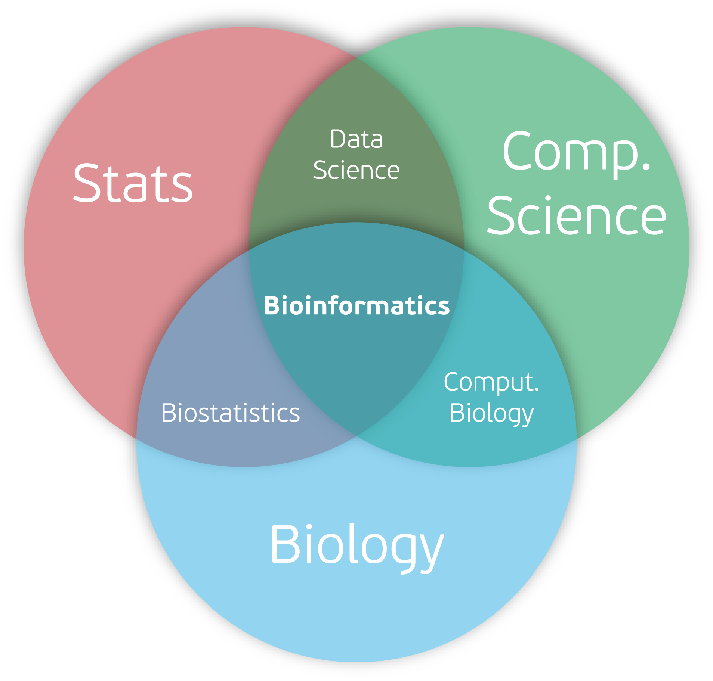
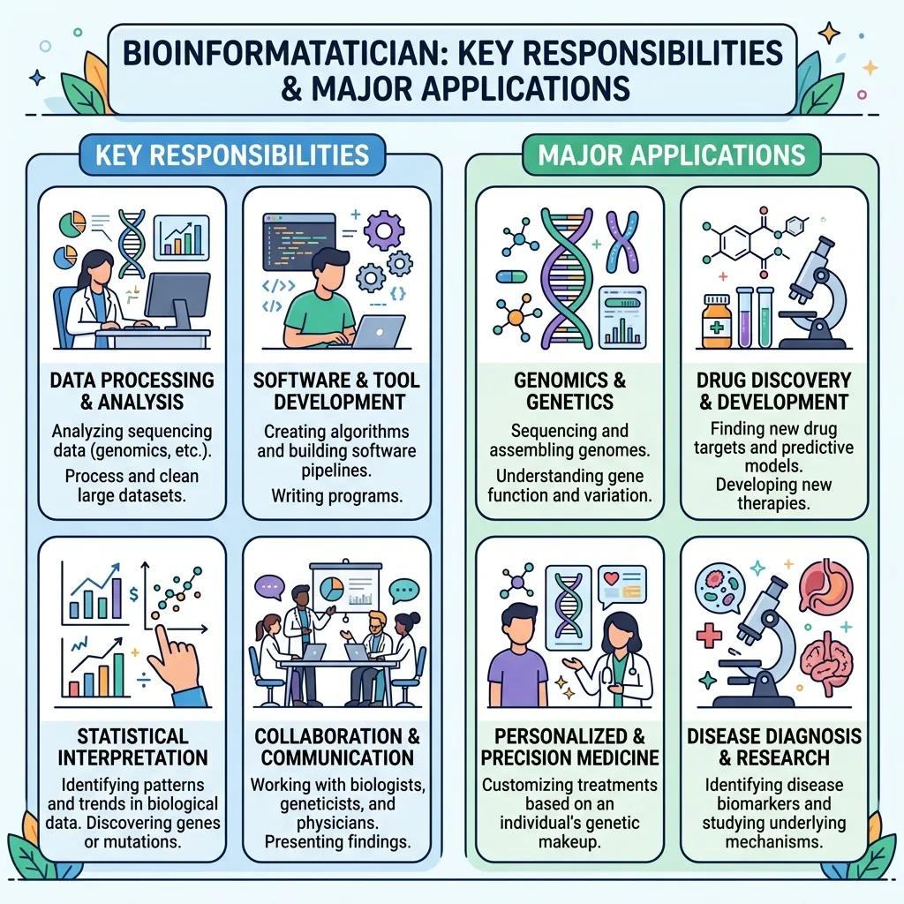
Developing an understanding of Candida auris emergence
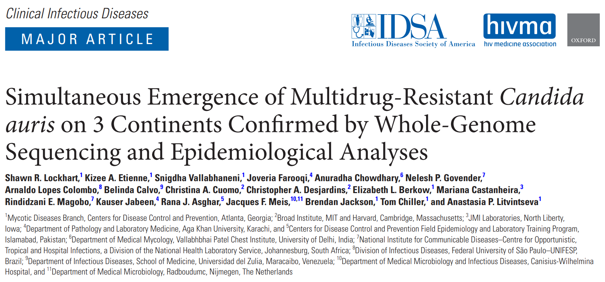
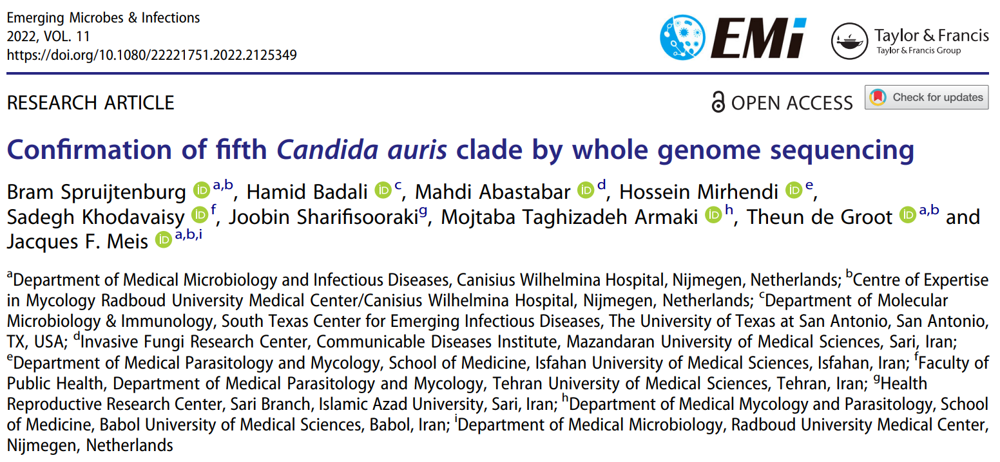
Simultaneous Global Emergence?!
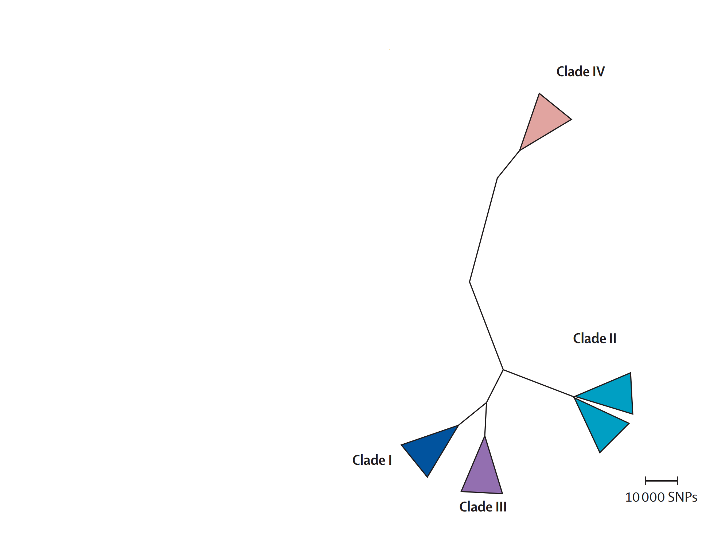
Simultaneous Global Emergence?!
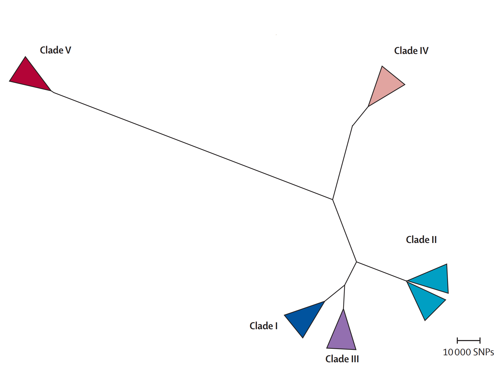
Simultaneous Global Emergence?!
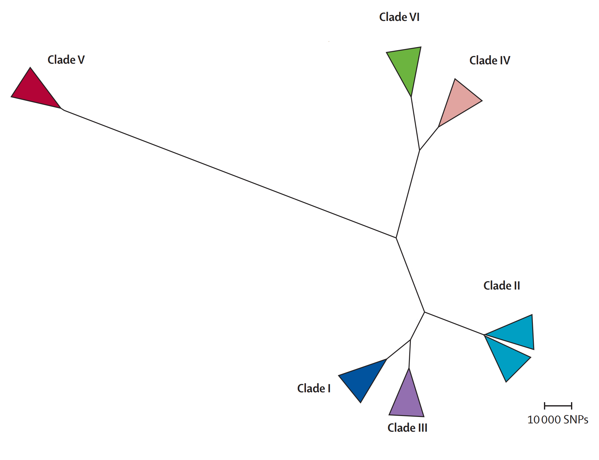
Candida auris in the US
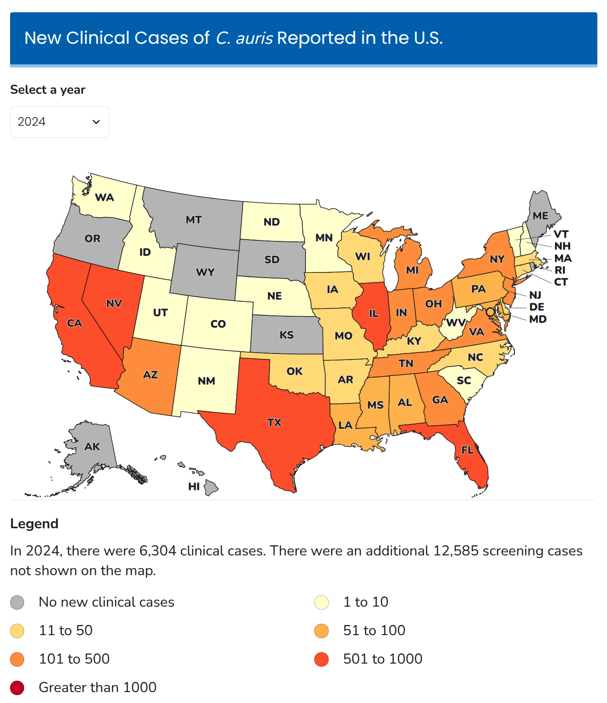
What can you do to stop the spread of Candida auris?
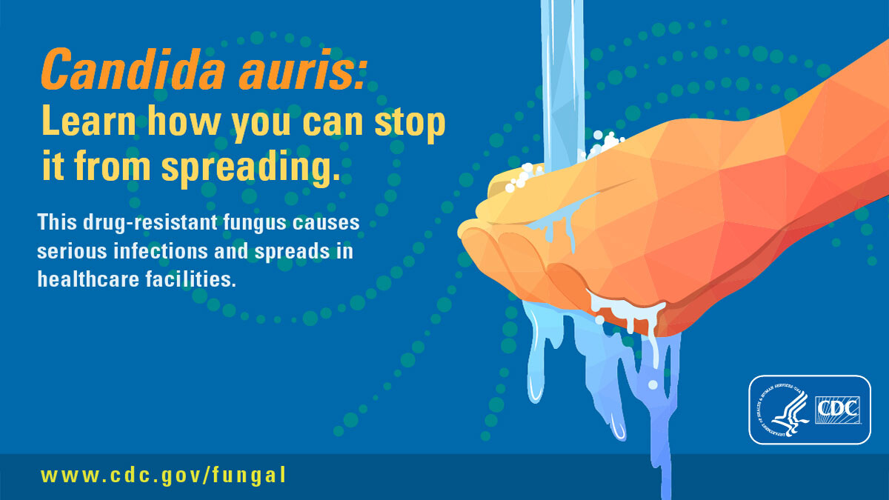